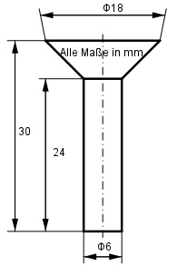

Aufgabe 284 Wie viel g wiegen 100 solcher Aluminiumnieten, wenn sie eine Dichte von 2,7 g/cm3 haben?

Der Niet besteht aus einem Zylinder Z und einem Kegelstumpf K. Z = л * r2 * h r = 6 mm/2 = 3 mm Z = л * 32 mm2 * 24 mm = 678 mm3 = 0,678 cm3 л * h K = -------- * (r12 + r1 * r2 + r22) 3 h = 30 mm - 24 mm = 6 mm r1 = 18 mm/2 = 9 mm л * 6 K = ------- * (92 + 9 * 3 + 32) mm3 3 K = 2 * л * (81 + 9 * 3 + 9) mm3 K = 735 mm3 = 0,735 cm3 V = 0,678 cm3 + 0,735 cm3 = 1,413 cm3 m = 100 * V * р m = 100 * 1,413 cm3 * 2,7 g/cm3 = 381,5 g